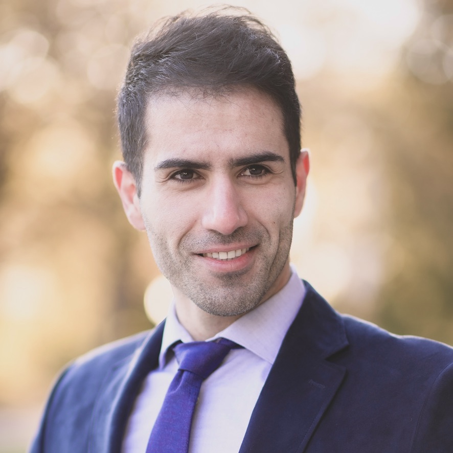

Mohammadreza Khani, PhD / Engineering portfolio
Complex physics.
Practical engineering.
I’m a mechanical engineer working across aerospace, thermal systems, and biomedical fluid dynamics. I use CFD, system modeling, and engineering software to understand how things flow, heat up, and perform.

Boeing / Wisk · Amazon LEO · Blue Origin · Alcyone Therapeutics · University of Idaho
Explore the portfolio
The work behind the models.
CFD simulations
See flow, free surfaces, particle motion, and heat transfer through my public simulation posts.
Explore simulations →02 / ReadResearch & publications
Browse journal articles on drug delivery, CSF dynamics, biomedical models, and propulsion.
Browse publications →03 / ExploreExperience & projects
Follow my engineering work across Boeing / Wisk, Amazon LEO, Blue Origin, Alcyone, and academia.
View experience →My approach
From physical systems
to useful predictions.
I work across detailed 3D simulations, reduced-order system models, and experimental comparison. My projects include cryogenic tank pressurization, battery cooling architecture, spacecraft impact analysis, and patient-specific CNS drug-delivery models.
Through Khani Solutions, I bring engineering analysis and software development together to make complex simulation workflows repeatable and useful.
Get in touch →